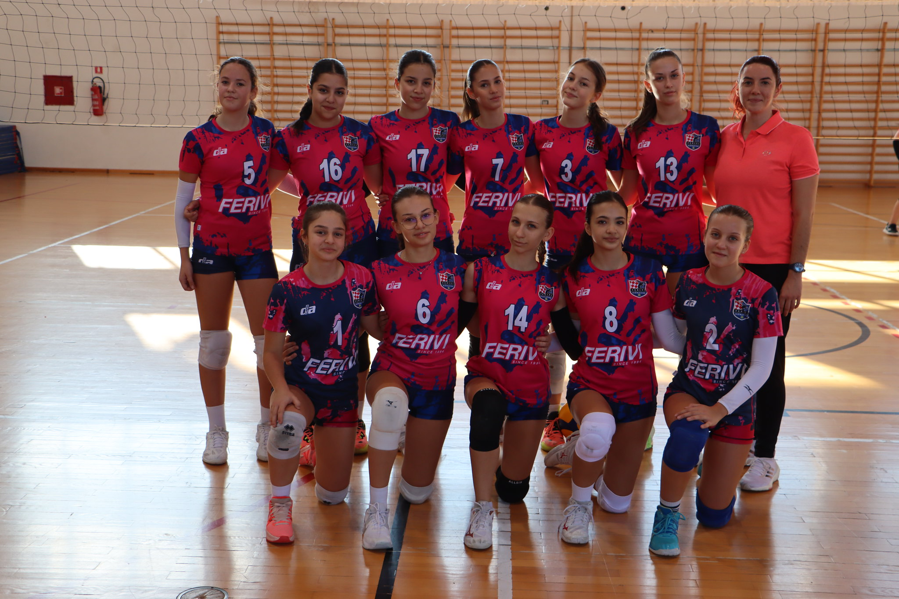

U srcu sportskih uzbuđenja regije Istok, mlada kadetska odbojkaška ekipa od četrnaest talentiranih igračica, rođenih 2007. godine i mlađih, zakoračila je na teren 3. lige. Ovaj skup neustrašivih mladih talenata predstavlja svijetlu budućnost odbojke, natječući se hrabro i s entuzijazmom u izazovnom sportskom okruženju.
Natjecanje u 3. ligi - Regija Istok predstavlja za njih veliki izazov, no ova ekipa hrabro prihvaća svaku prepreku s osmijehom na licu. Njihova predanost treninzima i radu s trenerima rezultira stalnim napretkom i razvojem, dok zajedno grade svoj put ka sportskom uspjehu.
Osim što se natječu na terenu, ova kadetska ekipa gradi i snažne međusobne veze izvan sportskih dvorana. Podrška i zajedništvo koje dijele izvan natjecanja ključni su za formiranje stabilne i pobjedničke atmosfere unutar tima.
>Dok kadetska ekipa hrabro kroči prema svjetlijoj budućnosti odbojke u regiji Istok, zajednica s nestrpljenjem iščekuje svaki novi sportski podvig. Ova ekipa predstavlja temelj iz kojeg će se izroditi buduće odbojkaške zvijezde, a njihova strast i predanost obećavaju uzbudljivu budućnost ovog sporta u regiji.
